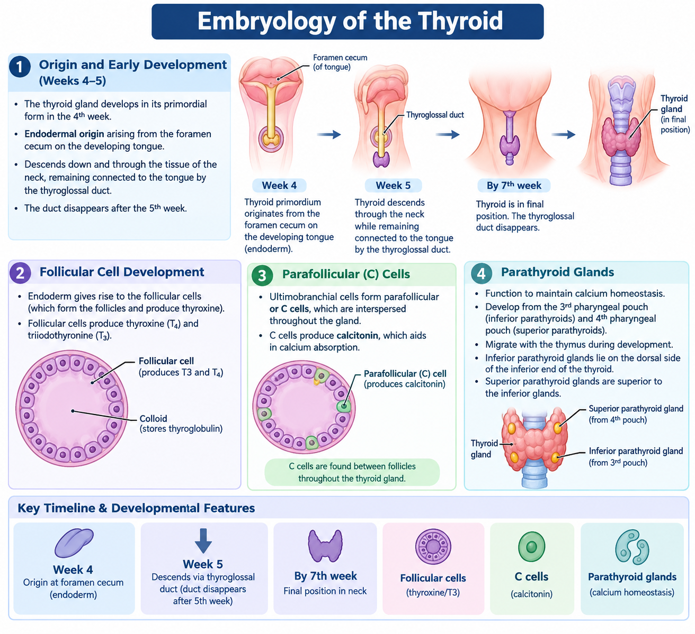
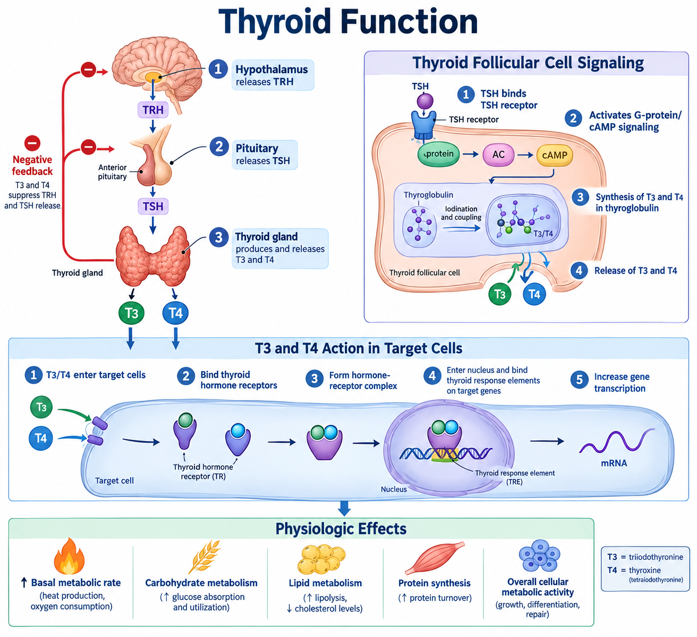
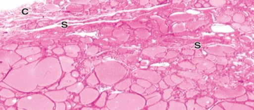
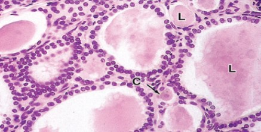
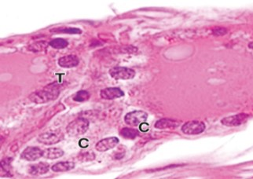

Topic Title
On This Page
Embryology
- The thyroid gland develops in its primordial form in the 4th week.
- Endodermal origin, arising as proliferation on tip of foramen cecum on developing tongue
- Descends down and through tissue of neck arising at end of thyroglossal duct
- Thyroid stays connected to duct until the duct disappears after 5th week
- By 7th week, thyroid is located in final position.
- When formed, contains two lobes, connected by a strip called the isthmus
- Endoderm develops to neural crest cells develop to follicular cells-main cells of the thyroid
- Follicular cells produce thyroxine
- Ultimobranchial cells form parafollicular or C cells-interspersed throughout gland
- C Cells produce calcitonin which aids in calcium absorption
- Parathyroid glands
- Function to maintain calcium homeostasis
- along with thymus-arises from 3rd pharyngeal pouch further develop to thymus
- Regulates calcium homeostasis
- Inferior parathyroid glands lie on dorsal side of inferior end of thyroid
- Superior parathyroid glands are superior to the inferior glands

Thyroid Function
- The thyroid is an endocrine gland that secretes hormones for metabolic equilibrium
- Maintains cellular metabolic rate by breaking down lipids and carbohydrates and protein synthesis
- Secretion of thyroid hormones (T3 and T4) controlled by the tropic factors (signaling proteins)
- T3= tri-iodothyronine
- T4=tetra-iodothyronine
- Low levels of T3 and T4 cause release of thyrotropin release hormones (TRH) and thyroid stimulating hormones (TSH)
- In turn cause levels T3 and T4 to rise and then suppress TRH and TSH secretions
- Thyroid stimulating hormone binds on receptors of follicular cells causing G-protein and then synthesis and release of T3 and T4
- T3 and T4 interacts with thyroid hormone receptor forming a hormone receptor complex
- Complex translocates to follicular cell nucleus binding to thyroid response element on target genes
- Initiates transcription leading to cellular carbohydrate and lipid catabolism and protein synthesis in wide range of cells
- Increases basal metabolic rate

FNA of Thyroid
- Thyroid is located below and anterior to the larynx
- Consists of two lobes connected by a thin isthmus
- Gland produces Thyroid stimulating hormone (TSH)
- Process of making TSH begins in the hypothalamus and anterior pituitary gland
- Thyrotrophin is the precursor product (a tropic factor)
- TSH binds to receptors on follicular cells which in turn activate Gs protein
- Gs triggers increase in intercellular cAMP, which then stimulates thyroid growth and then hormone synthesis
Histology of Thyroid Gland
- A fibrous capsule surrounds the vascular organ through which a septa feeds blood vessels, lymphatics and nerves into gland
- Thyroid is composed of millions of round follicles (macro to micro) of various diameters separated by thin connective tissue
- Each follicle consists of simple epithelium called thyroid epithelial or follicular cells (also called thyrocytes), and a central lumen filled with colloid
- Thyroid epithelial cells secretes thyroid hormones in the storage form thyroglobulin (a large glycoprotein) as colloid, precursor of active thyroid hormones
- Colloid is acidophilic and gelatinous
- Thyroid storage feature is unique among endocrine glands given there is a 3 months supply of hormones in circulating blood
- Thyroid epithelial cells are low columnar, and sit on basement membrane
- Parafollicular or C-cells present singly or in groups among follicular cells
- Arise from neural crest cells, similar to follicular cells
- Neurosecretory cells that secrete calcitonin which lowers serum calcium levels



Images

References
- Author. Title of article. Journal Name. Year;Volume(Issue):Pages.
- Author. Title of second article. Journal Name. Year;Volume(Issue):Pages.